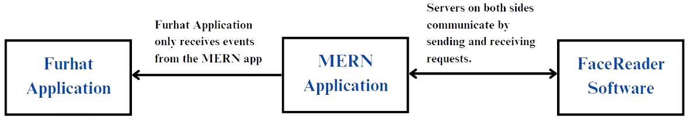

Talking Social Robot
Have you ever imagined studying with a robot that can talk to you, understand your emotions, and even help you plan your schedule? That’s exactly what my dissertation project aimed to achieve!
Using a MERN stack application, the Furhat social robot, and FaceReader software, I created a system that helps students manage their study schedules and stay on top of their academic goals—all while promoting emotional well-being.
Before I dive into the specifics, see the project in action:
Project code here
The Core Components
The project consisted of 3 main components :
MERN Application
I chose MERN stack for the application for its popularity and extensive community support, which provided helpful tutorials during development. The MERN stack consists of the following four technologies:
- MongoDB: A NoSQL database used to store and manage application data.
- React: A JavaScript library for building the front-end user interface.
- Express: A back-end framework that connects the front end with the database and handles HTTP requests.
- Node.js: A JavaScript runtime that serves as the server, enabling efficient handling of multiple asynchronous operations.
This full-stack web app forms the backbone of the system, and provides an interface for students to manage their class schedules, track assignment deadlines and generate study plans and quizzes
Furhat Robot
Furhat is a social robot designed to engage with users using lifelike facial gestures and speech. In this project, it acted as a study buddy by:
- Quizzing students on their notes to reinforce learning
- Performing calming exercises like guided breathing, gratitude reflection, and emotion regulation to support mental well-being
FaceReader Software
Developed by Noldus, FaceReader detects and analyzes the six universal expressions: happy, sad, angry, surprised, scared, and disgusted, plus contempt and a neutral state. In this project, it played a crucial role by detecting signs of stress, such as sadness, anger, or fear, and alerting Furhat to initiate calming exercises to help students relax.
Interaction between Components
At a high level the components interacted in the following way: 
Furhat Robot
The Furhat Robot received requests from the MERN application. These requests dictated actions such as:
- Greeting the user.
- Introducing the user to the application's functionalities.
- Quizzing the user whenever a quiz was generated.
- Initiating a calming activity if the user appeared stressed.
MERN Application and FaceReader Software
When the user started a study session, the MERN application notified the FaceReader software to begin analyzing the user's emotions. If FaceReader detected a stress-related emotion, it sent a response back to the MERN application. The MERN application then relayed a request to Furhat to initiate an appropriate calming activity, helping the user relax.
The Power of OpenAI’s GPT
To add intelligence to the system, I integrated OpenAI’s Large Language Model (LLM). Here’s how they were used:
- Generating Study Schedules: Using the Chat Completions API, personalized study plans were generated based on users’ class schedules and deadlines. These plans outlined specific tasks for each study session
- Generating Quizzes: Questions derived from user-submitted notes made interactive learning sessions possible
- Furhat’s Conversations: LLM powered the robot’s responses during calming activities, enabling it to engage empathetically and naturally
Prompt Engineering: Making It Work
Getting the best results from OpenAI required carefully crafted prompts. This process, known as prompt engineering, ensured that the outputs were accurate and useful. Key strategies for writing well-designed prompts include crafting clear and specific instructions, breaking complex tasks into manageable steps, and systematically testing and refining the prompts.
For generating a study schedule, I designed the prompt(shown below) to include all the necessary details, such as the start and end times, tasks for each session, and the desired format for the output. This ensured I could easily extract relevant details and display them on the user interface.
Why This Project Matters
Have you ever wondered why it’s so hard to remember what you studied just a few days ago? German psychologist Hermann Ebbinghaus was curious about this too, which led him to uncover the Forgetting Curve.
This curve explains how memory fades over time—and, more importantly, how to stop it. His research showed that reviewing information at just the right moments, before it’s forgotten completely, can dramatically improve memory retention. This approach, known as spaced learning or distributed practice, is a proven way to study smarter, not harder.
But there’s more. Research over the years has highlighted another key to learning: the testing effect. Actively quizzing yourself—rather than passively reviewing notes—strengthens memory and helps transfer information from short-term to long-term storage. Combine that with spaced repetition, and you’ve got a powerhouse strategy for mastering just about anything.
However, academic success isn’t just about cognitive techniques. It’s also about mental well-being. Studies show that students who feel emotionally supported and optimistic are more engaged and perform better academically. This balance between effective study strategies and emotional health is crucial—and that’s exactly what this project aimed to address.
This application combines education and well-being, demonstrating how technology can support students in unique ways. By integrating advanced tools like Furhat, FaceReader, and OpenAI, I explored innovative ways to:
- Make studying less stressful
- Foster emotional health
- Enhance the overall learning experience